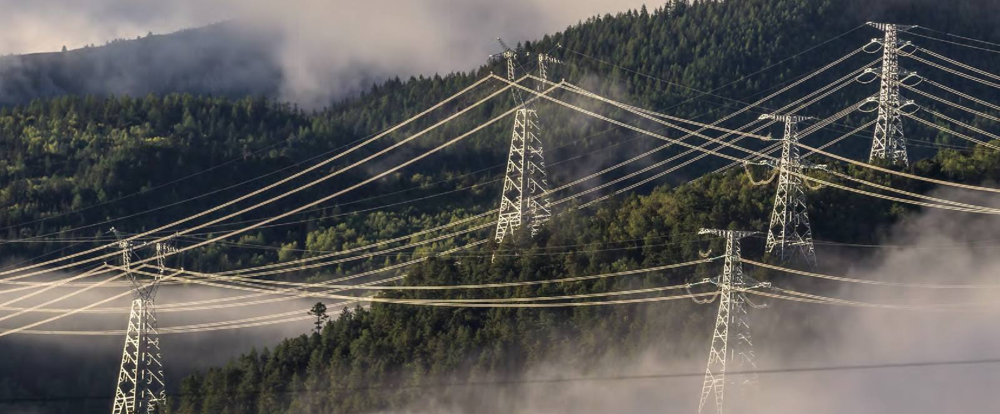

Central banks are nearly done easing, so budgets must do more. AI capex keeps Taiwan and Korea busy, India offers the best entry point, and China and Japan reward selectivity. Here is what we expect, market by market, and how we are positioning.
Asian economies outperformed in 2025, helped by a broadly weaker U.S. dollar. Monetary easing is in its final legs, so fiscal policy carries more of the load in 2026, and AI capex keeps the region’s exporters busy.
Asian central banks have been steadily implementing monetary policy easing in 2025, and they look poised to enter the final legs of the easing cycle in the coming months. This means fiscal policy would play a bigger role in supporting growth in 2026. Indonesia exemplifies this pro-growth stance: the new administration has outlined a suite of fiscal policies aimed at boosting liquidity, accelerating state spending, and supporting key sectors such as agriculture, energy and infrastructure.
Looking ahead to 2026, we are optimistic about global AI tailwinds continuing to support tech exporters like Taiwan and South Korea. India presents a compelling entry point with a robust mix of cyclical tailwinds. China will likely continue to grapple with structural economic challenges, though its impressive pace of tech innovation can yield select winners in some sectors. Japan’s macro outlook is complicated by stubborn inflation and a behind-the-curve central bank, though its equities still offer medium-term opportunities.
“Asian central banks look poised to enter the final legs of the easing cycle. This means fiscal policy would play a bigger role in supporting growth in 2026.”
2026 Asia Outlook, Asia Strategy FocusYes, but it stays lopsided. Exports drive most of the growth while consumption is weak, investment is disappearing and property is still contracting. We expect real GDP growth of 4.3%, and we look for winners in innovation, not in the index.
The Chinese economy remains unbalanced with exports driving most of the growth. We expect that imbalance to persist: the trends of weak consumption and disappearing investment amid a historic export boom are likely to continue into 2026, with the property sector still weak and weighing on investment. On that basis we expect real GDP growth of 4.3% (range 4.1–4.6%) in 2026, moderating from 2025 due to the high base for export growth.
Will consumption recover? Not in a big way. The weakness traces back to a weak labour market and slowing income growth rather than to a lack of stimulus. The major consumer-stimulus policy in 2025, trade-in subsidies for some durable goods, is set to continue in 2026; it helps the categories it targets but does not change the income picture. We expect further support to come mainly through faster deployment of existing fiscal resources.
What does the industrial build-out mean globally? China’s market share has risen to about 15% of total global exports, and that success invites pushback. These developments are a key reason why we anticipate Chinese export growth to moderate heading into 2026. The tech sector is less exposed, as its investment is more measured and fundamentals could improve if “anti-involution” measures become more effective.
The yuan is a heavily managed currency under a low-volatility framework, which makes the U.S. dollar the main driver of USD/CNH. Momentum could push the pair below 7 in the near term; over the medium term we expect a stable, range-bound trajectory.
Why is the yuan less likely to appreciate significantly?“Negative earnings revisions in 2025 imply recent gains have been largely multiple-driven. We prefer a highly selective approach.”
Chinese equities: picking the winners is paramountIn our base case inflation moderates and stabilises near 2% over 2026, but only if several policy conditions line up. The equity outlook is constructive, and the market has already priced a lot of it in.
Japan’s macro outlook is complicated by stubborn inflation and a behind-the-curve central bank. Achieving our base case will likely require rice prices to peak in the fourth quarter, authorities to prevent excessive yen depreciation, and the new administration’s expansionary fiscal programme not to add demand-driven price pressure. We expect Shunto wage gains broadly in line with 2025’s outcome of around 5.5%, and the yen to remain weak in the near term before potentially grinding towards the 146–150 range by end-2026.
The new administration’s moderately expansionary fiscal program that balances increased social welfare with investing in new technologies/defense supports the market outlook. Furthermore, monetary policy remains relatively dovish, which could result in USDJPY staying in a higher range for longer, which is supportive for earnings. However, markets appear to have priced a lot of that optimism in, and modest upside to our December 2026 TOPIX outlook of 3,350–3,400 keeps us tactically neutral on Japanese equities.
We prefer select opportunities in the financial, industrial, consumer discretionary and technology sectors. Meaningful pullbacks present buying opportunities to build a long-term neutral allocation of around 5% within a globally diversified equity portfolio.
Japanese equities: a constructive outlook that markets have already priced inLow inflation, rate cuts, tax cuts and infrastructure spending re-accelerate earnings. Valuations are reasonable and active EM funds hold almost no India. Tariffs are the headwind.
India presents a compelling entry point with a robust mix of cyclical tailwinds and remains one of our top implementation ideas outside the U.S. despite export headwinds. Inflation has been low at around 2%, a 47-year low, which gave the Reserve Bank of India room to cut rates by 125bp from 6.50% to 5.25%. Together with direct and indirect tax cuts from the recent budget and infrastructure projects, this underpins a 2026 GDP growth projection of 7.5%. The Liberation Day tariffs hit India at a 36% effective rate, which persists in the absence of a trade deal.
We expect the tailwinds for the economy to translate into tailwinds for earnings recovery, since India’s earnings growth is strongly correlated to GDP growth historically. The current earnings downgrade cycle has been extended at 14 months vs a 9–10 month historical average since 2000. Estimates seem to have stopped drifting lower, and the September earnings season saw growth accelerate to 13% YoY, 4% better than expected at the start of the reporting period. We expect earnings growth to re-accelerate at 13–14% p.a. in both 2026 and 2027, versus about 11% in 2025.
December 2026 MSCI India outlook of 3,350–3,450, implying an expected low-to-mid-teens total return. Relative P/E vs the S&P 500 sits one standard deviation below the 10-year average. India makes up close to 3% of a globally diversified equity portfolio.
Indian equities: attractive entry point for long-term performance
Global AI tailwinds continue to support Taiwan and South Korea in 2026. Taiwan dominates advanced fabrication, Korea leads the world in memory, and together they drive an earnings upgrade cycle across Asia ex-Japan.
We estimate that close to 30% of total AI capex makes its way to these two economies, which has been a tailwind for growth amidst trade uncertainty across Asia. This is consequential enough to drive an earnings upgrade cycle in Asia ex-Japan that could keep earnings growth elevated at 12–13% in 2026 and 10–11% in 2027.
Korea is leading the world in the increasingly important role of memory in AI applications and workloads, while authorities continue to push companies to improve valuation multiples through shareholder-friendly measures. Taiwan dominates advanced chip fabrication, the other critical bottleneck in the AI supply chain. The risks are concentration in a handful of large companies, any slowdown in AI capex, and geopolitics.
“Leading the world in the increasingly important role of memory in AI applications and workloads.” Korean authorities are also pushing companies to lift valuation multiples through shareholder-friendly steps.
On Korea, 2026 Asia OutlookHow the views translate into positioning across Chinese, Japanese and Indian equities, and Asia fixed income.
Add on pullbacks, but through the China Tech Innovator Basket: AI and “super apps”, NEV and autonomous driving, semiconductor localisation. High-quality dividend names and depressed-valuation consumer names round it out. Recent gains were largely multiple-driven, so selection beats beta.
Back to the China chapterModest upside to the December 2026 TOPIX outlook of 3,350–3,400. Prefer financials, industrials, consumer discretionary and technology; use meaningful pullbacks to build a long-term neutral allocation of around 5%.
Back to the Japan chapterDecember 2026 MSCI India outlook, implying a low-to-mid-teens total return. Earnings re-accelerate to 13–14% p.a. in 2026 and 2027, relative valuations are a standard deviation below average, and active EM funds hold almost none. Build a long-term allocation of close to 3%.
Back to the India chapterAsia IG all-in yields at a duration near 4.5 years, with over 40% of the index in sovereign and quasi-sovereign issuers. Prefer subordinated capital from Japanese insurers and global banks. In high yield, BB with healthy leverage over low-quality single B; Indian HY and Macau gaming credits.
Test your view: can you beat Asia cash?Tell us what is on your mind and we will point you to the sections to start with.
You have covered a lot on this page. We will send you a short summary of the market views, the numbers behind them and the implementation ideas, shaped by what you explored here. And if you would like to go further, your J.P. Morgan team can bring our strategists’ views to your own portfolio.